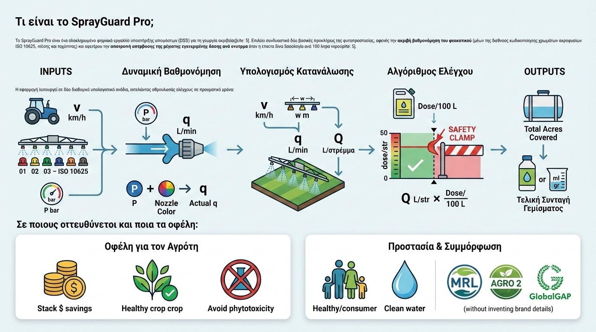

Το SprayGuard είναι ένα εξειδικευμένο ψηφιακό εργαλείο υποστήριξης αποφάσεων (DSS) για τον αγροτικό τομέα. Δημιουργήθηκε για να επιλύσει ένα από τα συχνότερα και πιο κρίσιμα προβλήματα στη φυτοπροστασία: την ακούσια υπέρβαση της μέγιστης επιτρεπόμενης δόσης ανά στρέμμα όταν η δοσολογία της ετικέτας αναγράφεται ως συγκέντρωση ανά 100 λίτρα νερού και η κατανάλωση ψεκαστικού υγρού είναι υψηλή (π.χ. σε δενδρώδεις καλλιέργειες ή αμπέλια).

Πώς δουλεύει; (Αλγοριθμική Προσέγγιση & Βαθμονόμηση)
Η εφαρμογή εκτελεί δυναμικούς υπολογισμούς σε πραγματικό χρόνο, διασταυρώνοντας τα τεχνικά χαρακτηριστικά του ψεκαστικού με τις προδιαγραφές της ετικέτας του σκευάσματος:
- Input Validation & Calibration: Ο χρήστης καταχωρεί τη χωρητικότητα του βυτίου ($L$) και την πραγματική κατανάλωση ψεκαστικού υγρού ανά στρέμμα ($L/\text{στρ.}$), όπως αυτή προκύπτει από τη βαθμονόμηση (ακροφύσια, πίεση, ταχύτητα τρακτέρ).
- Cross-Check Algorithm: Όταν η δόση ορίζεται ανά $100\text{ L}$, ο αλγόριθμος υπολογίζει τη θεωρητική δόση ανά στρέμμα βάσει της εξίσωσης:
Δόση/στρ = (Δόση ανά 100L × L νερού/στρ) / 100
- Safety Threshold Clamp: Συγκρίνει το αποτέλεσμα με τη μέγιστη εγκεκριμένη δόση/στρέμμα της έγκρισης κυκλοφορίας. Εάν διαπιστωθεί υπέρβαση, το σύστημα ενεργοποιεί αυτόματο «κόφτη» (clamp), αναπροσαρμόζει τη συγκέντρωση στο βυτίο και προειδοποιεί τον χρήστη.
- Tank Dosing Output: Εξάγει με απόλυτη ακρίβεια την τελική ποσότητα σκευάσματος (σε $ml$ ή $g$) που πρέπει να προστεθεί στο βυτίο, καθώς και τη συνολική έκταση (στρέμματα) που καλύπτει κάθε γέμισμα.
Σε ποιους απευθύνεται και πώς βοηθάει;
Η ορθή δοσομέτρηση αποτελεί τον πυρήνα της ολοκληρωμένης διαχείρισης, της προστασίας του περιβάλλοντος και της μείωσης του κόστους παραγωγής.
- Επαγγελματίες Αγρότες: Αποτρέπει τη σπατάλη ακριβών γεωργικών φαρμάκων, μειώνει τον κίνδυνο φυτοτοξικότητας στην καλλιέργεια και διασφαλίζει ότι δεν υπάρχουν υπερβάσεις στα ανώτατα όρια υπολειμμάτων (MRLs).
- Γεωπόνους & Συμβούλους: Παρέχει ένα άμεσο, αξιόπιστο εργαλείο επίδειξης και καθοδήγησης των παραγωγών κατά τη συνταγογράφηση και τη βαθμονόμηση ψεκαστικών μηχανημάτων.
- Συμμόρφωση με την Ορθή Γεωργική Πρακτική: Εξασφαλίζει την πλήρη εναρμόνιση των εφαρμογών με τις νομικές προδιαγραφές του Υπουργείου Αγροτικής Ανάπτυξης & Τροφίμων (ΥΠΑΑΤ) και των προτύπων πιστοποίησης (GlobalGAP, AGRO 2).
← Επιστροφή στο Portfolio